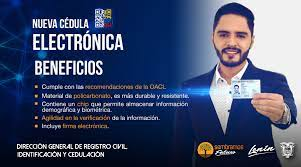
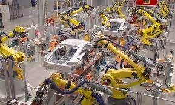
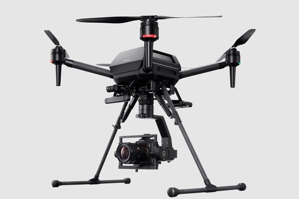

Cedula digital
Cédula de ciudadanía se podrá tramitar de forma digital en Ecuador.
Desde el próximo 1 de mayo los ecuatorianos podrán renovar su cédula de identidad
sin la necesidad de acudir presencialmente a las agencias del Registro Civil.
El documento se entregará en el domicilio y su trámite será digital.

Robots industriales
El robot industrial es un manipulador programable en tres o más ejes con varios propósitos,
controlado automáticamente y re-programable. El campo de la robótica industrial puede
definirse como el estudio, diseño y uso de robots para la ejecución de procesos
industriales.

Drones nuevos
La compania de Sony a lanzado su mas nuevo invento un dron que es toda una bestia especial
para los directoresde cine con un valor de 9.000 dolares es capas de llevar una camara
full frame a mas de 70km/h se podria decir que es el dron mas completo del mercado.
